The clock is ticking. The TCM Security summer sale is officially in its final week and will wrap up on July 15, 2026.
If you want to build practical cybersecurity skills, you can currently score 20% off all certifications and live training, no discount code required. Because these exams are 100% hands-on and mirror real enterprise environments, they are some of the most respected credentials in the industry.
Here are the most popular tracks you can jump into right now:
⚔️ Red Team
I celebrated a National holiday with my family. Stayed local and went around town. It was quite busy because it was mixed with the FIFA crowd aka tourists. One of the booths was the local fire department. I saw that they had a pamphlet about becoming a firefighter. I had a chat with the person who was working the booth. It looks interesting and I may be considering it, because I am still struggling of finding a cybersecurity analyst role.
I hope you enjoyed the day off, but if you didn't because you had to work, I hope you got that extra pay.
I am doing bug bounty hunting on a VDP (vulnerability disclosure program). I thought I finally found a valid bug in my bug bounty hunting journey, but unfortunately it is a false positive and appears to be intended by design.
Just got to keep on moving forward. Consistence is key especially in bug bounty hunting.
I hope you’re taking advantage of the TCM Security summer sale!
Right now, you can get 20% off all certifications and live training no discount code needed. The sale runs until July 15, 2026, so there's still plenty of time, but I’ll drop another reminder a week before it ends so you don’t miss out.
If you're ready to dive in and upgrade, you can use my Program Partner links below to check out their most popular certifications and live training options.
Popular Certifications:
My significant other’s yard was in serious need of some TLC. It was a beautiful day, so I initially planned to tackle the project solo, but my dad tagged along to help out. He loves hands-on work, so we teamed up and got started around 11:00 AM.
My dad took on the manageable task of trimming the tree branches, which left me acting as the swamper. No complaints from me swamping is hard work, but I actually really enjoy it. My dad had to leave a bit early around 18:00 to run some errands, but I kept pushing through and wrapped up the remaining work by 19:00.
Why am I posting about yard work on a cybersecurity portfolio? Honestly, because everyone needs a break from the screen. While this website is primarily dedicated to cybersecurity, I’ll occasionally post non-technical contents to keep things grounded. Besides, I like to prove I'm not just your typical tech nerd! Haha.
Get 20% Off TCM Security Certifications (Summer Sale!)
If you’ve been on the fence about leveling up your practical hacking or defensive skills, today is the day to jump. TCM Security just launched their annual Summer Sale, slashing 20% off all certifications and live training from June 15 through July 15, 2026.
Personally, I’m a huge fan of TCM because their exams are completely practical, no grueling multiple-choice questions, just real-world exploitation, defense, and report writing. I hold both the PNPT (Practical Network Penetration Tester) and the PSAA (Practical SOC Analyst Associate), so I can personally vouch for how much value these two certifications bring.
You don't need a discount code; the price drop is applied automatically
➡️ [Secure Your Discounted TCM Voucher Here]
(Disclaimer: Purchasing through this link supports my work via a small commission at absolutely zero cost to you. Thank you so much for the support!)
This CTF by TCM Security was quite fun. It is difficult but challenging to get you working. I am not a CTF player by any means, but I still enjoy playing. Even though I am not a CTF player, I will say that in the real world it is different and “easier” and not like a CTF. This is my first CTF write up were I was successful. Hopefully, I can write more CTF write ups.
When you go the CTF website, https://ctf.tcmsecurity.com, there will be two buttons; “Download flag” and “Flag check”. When you click on the “Download flag”, you get a message “Something went wrong”. You will think there is something actual wrong, but the error message is intended.
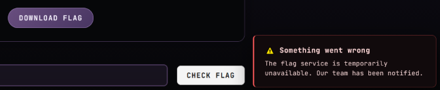
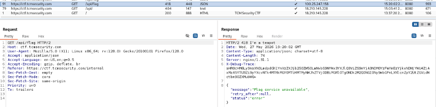
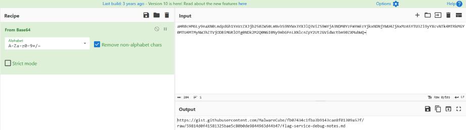
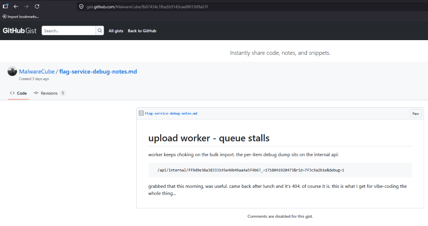
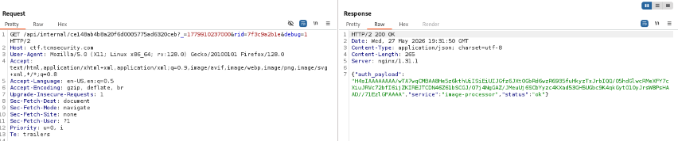
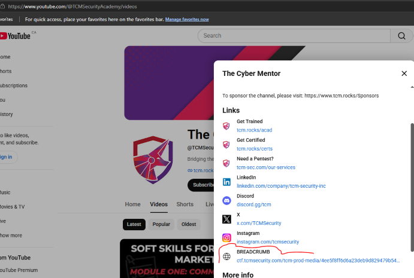
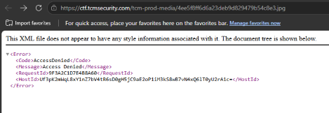
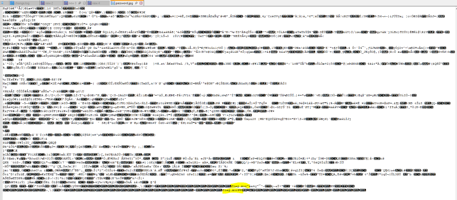
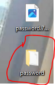
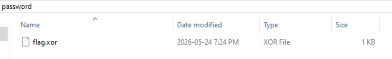
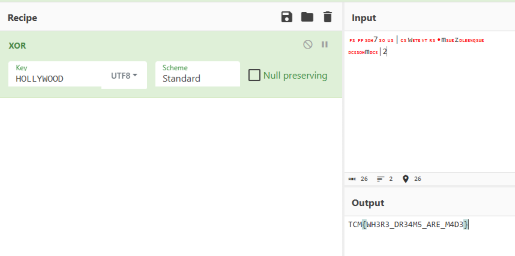
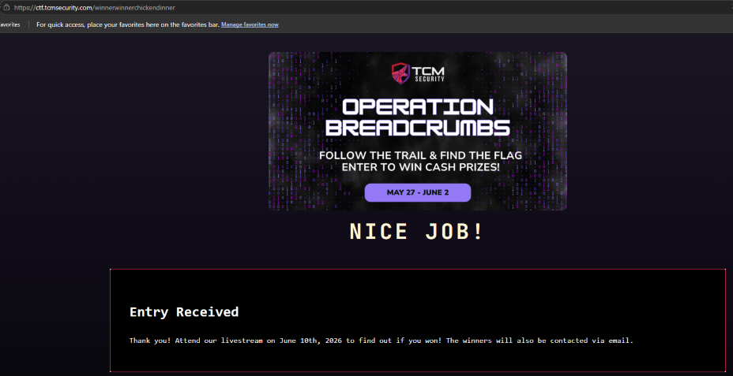
Whew! Bsides Vancouver is done. This was a fun and unique event for me because I was on the "other side" of it this time. As a member-at-large, I was assigned to registration. The volunteers working with me did an awesome job and to be honest, they did the majority of the work. I was essentially just the person with the radio, haha.
I also used my IT Ops skills to assist one of the sponsors who was having internet connectivity issues. One of the volunteers told me that a sponsor was having trouble connecting to the venue’s Wi-Fi. I checked the sponsor’s laptop, which is a Mac, and confirmed that it was connected to the correct SSID. I performed standard troubleshooting steps such as turning the Wi-Fi adapter off and on, flushing the local DNS cache, and temporarily disabling any VPN connections. None of these made a difference. The only thing I hadn’t tried was restarting the Mac. I asked the sponsor if it was okay to restart it, and they confirmed it was. After the restart, the sponsor tried the Wi-Fi again and confirmed that the internet connectivity was working.
The event eventually sold out, which was a surprise to both me and the other board members. It was great meeting new people and catching up with familiar faces. I managed to catch a few talks, but I didn't stay too long because I felt guilty; as a board member, I didn't want to misuse my position, per se. The after-party was great too, which I was able to relax at the same time.
I hope everyone had a great time. 'Til the next Bsides Vancouver!
Bsides Vancouver is coming up real soon which is happening on June 1, 2026. I might be running around and be all over the place, because I am a member at large for MARS (Mainland Advanced Research Society). But, if you do see me, come up and say hi.
This is the website, Bsides Vancouver 2026, to purchase your ticket and any additional informations you need to know. I hope to see you all there.
I am excited to announce that I am Program Partner for TCM Security. I have been following TCM (Heath) since the beginning. The way TCM present himself and the contents produced are phenomenal. I know that Heath has departed ways, but I still believe in TCM Security’s mission statement and what they are about.
TCM Security is a well known training provider that is recognized in the cybersecurity community for its affordability, being practical, and hands-on approach. They also offer cybersecurity services.
If you are looking to advance your career or build verifiable skills, I recommend two specific offerings from their catalog:
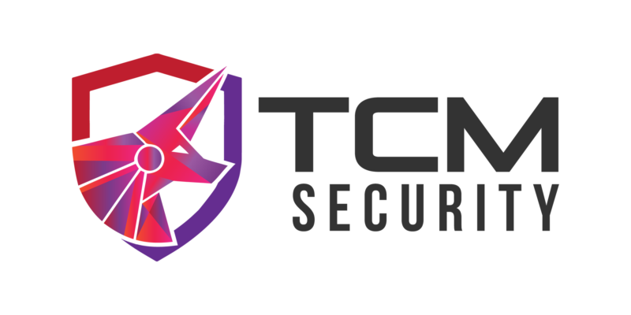
It has been a while since I posted. I have been busy with interviews and volunteering at events.
The interviews I did are good but no final offer given. I would either get to the second, third, or final interviews, but no serious commitment. It is what it is, I just need to keep on moving forward.
I volunteered at a tech conference specifically Cloud. The conference was called Cloud Summit. This is the website, Cloud Summit 2026, if you want more information about it. This was my first time attending a tech conference that wasn’t cybersecurity related. It was nice because I got to meet individuals in the other areas of IT, and also checking out tech related services and products.
Another organization I volunteer at is Team Rubicon Canada. They are a disaster response organization that assist before, during, or after a disaster happens. This is the website, Team Rubicon Canada, if you want to learn more about them. Even though the majority are veterans, there are civilians too. The event I participated with Team Rubicon Canada is the BMO marathon run. This was a community engagement. Team Rubicon Canada was part of the course marshal group. The main job duty was to direct runners to the correct/appropriate path. We also directed attendees to areas that will not cause disturbance to the runners. On occasion we would direct vehicles to the proper route, but there are dedicated traffic control teams or the Traffic Police. The other event is Core Operation course and the Site Survey course. These two courses was interesting to me. Every time I attend a Team Rubicon Canada event, I always learn something new.
For the past couple of weeks I have been using AI for bug bounty hunting. I don’t know if I am prompting it incorrectly but it was hallucinating quite a lot. Initially, there were some good suggestions and help but the more I ask and the more the questions got technical, that’s when it started going down hill. I still haven’t found a bug in my bug bounty hunting journey yet, but I will get there.
AI isn’t perfect but it is way better now when it first started. You have to acknowledge it because it is here to stay. Of course, still apply and implement best security practices when using AI.
The news about this cybersecurity incident is still new, but I feel this should be posted to give everyone a heads-up. Telus has confirmed there was a breach in their environment originating from Telus Digital, which is a subsidiary of Telus. Here is the link to the article: Telus Digital security incident
This goes to show that, whether you are a big company or a small company, a cybersecurity incident is bound to happen. You can have all the newest cybersecurity-related products and solutions, but if they are not properly utilized by highly disciplined and competent personnel, then something bad might happen.
If you use Telus or any Telus-related products, I suggest you reset the password you use for Telus, reset the MFA you use for Telus, and, if you reuse your Telus password for any of your other personal accounts, you should reset those as well.
There was a company I applied to. From my point of view, everything was going well, and I made it to the final-round interview. However, a few weeks later, they told me they would not be extending an offer. I believe one of the questions I answered may have been interpreted incorrectly, which most likely caused the rejection. I guess being honest isn’t appreciated anymore. It’s funny how many companies claim to promote honesty in their values but will reject a potential candidate for being honest. Sure, I used my time and energy on them, but I feel bad for them because they spent even more time and energy on me. Whoever they hired, I hope that individual doesn’t disappoint and doesn’t waste the company’s time. Lesson learned from this failure: I will improve for the next opportunity and eventually get a job.
For the time being, I have decided to work as an independent contractor/freelance cybersecurity analyst while I am still actively looking for full-time employment. The services I will be offering are computer and device repairs with security tune-ups, password and multi-factor authentication (MFA) setup, Wi‑Fi and router security hardening, basic network assessments, cybersecurity awareness training, OSINT investigation, external security assessments, and potentially internal security assessments. I will update this page with the necessary details.
Two interesting cybersecurity news that caught my eyes. One is a security advisory for Notepad++. Second one is an announcement from Microsoft about deprecating NTLM. Below are links to the two security advisory.
Bsides Vancouver is happening on May 31, 2026 – June 1, 2026. Check the website out for more information, Bsides Vancouver 2026
To check other Bsides events, you can go to the main website; Security Bsides Community, and look for a Bsides event that is within your location.
Microsoft handed over Bitlocker Keys to a government agency. Here is the article of it, Microsoft Reportedly Turned Over BitLocker Encryption Keys to the FBI. BitLocker is a Windows security feature that protects your data by encrypting your drives. This encryption ensures that if someone tries to access a disk offline, they won’t be able to read any of its content if they do not have the Bitlocker Key.
Even though this was a legitimate case a government agency was working on and they got a warrant, this should get you thinking about trusting your data and any highly sensitive PII (personally identified information) to well known tech companies, or other trusted/verified authorities. Yes, it sounds like a contradiction, but you still have the right, as an individual, to freely think, act, and decide what is best for you.
If you plan to use Microsoft’s BitLocker and want to manage your own BitLocker key, you can choose one of the following options: “Save to a USB flash drive,” “Save to a file,” or “Print the recovery key.”
I made another attempt of creating a LinkedIn account, but unfortunately my LinkedIn account got locked out/banned. As usual the reasoning was vague and useless. I am extremely disappointed with LinkedIn. I know that I am not doing anything that is either malicious like or suspicious like behaviours. I know that if you want to unlock your LinkedIn account you will need to use the Persona service, but you will compromise your privacy. Also, it is impossible to contact support as you need to log into your LinkedIn account in order to open a case.
I will continue to use this website/portfolio as an alternative to LinkedIn or find LinkedIn-like platforms. Not unless if someone from LinkedIn contacts me and provide me a legitimate reason on why I keep getting locked out/banned.
For anyone in the cybersecurity community you have learned that Heath Adams aka The Cyber Mentor has left his own company. This is Heath’s LinkedIn post, Heath’s departure from TCM
It is truly sad but Heath has definitely left a great legacy for the cybersecurity community. Whatever he does and wherever he ends up at next, I hope he has many successes. I will also still refer to him as TCM (The Cyber Mentor)
My Christmas break was nice and relaxing for me. Did the usual thing such as spending time with families.
Something new for me was that I went to parties that various cybersecurity groups attended. It was my first time attending them. Met a lot of people and made good connections. Hope I can attend the next one.
I am still on the job hunt. Hopefully, things start to pick back up.
I hope your Christmas break was good, feeling recharged, and ready to make it a great year.
It is the annual cybersecurity event that TryHackMe does for the whole month of December. The event is called Advent of Cyber, TryHackMe Advent of Cyber 2025. Since I am unemployed and actively looking for employment, doing this event is a continuation of self improvement and showing that I am not stopping. Not only are you learning but you will have a chance to win prizes too.
Another Advent of Cyber is by SANS, SANS Advent of Cyber 2025. SANS always produces quality contents. Give this a try too.
Whatever Advent of Cyber event you choose, I hope it inspires you, you learn something new, or you simply want to keep yourself busy during the Christmas holiday.
I attended a technical talk at a local DEFCON (DC) group. The technical talk was about OSINT by Ritu. It was quite an informative session which I enjoyed. I have seen Ritu presented before and I like the contents that Ritu discusses about. OSINT is one of the many sub categories of cybersecurity that I like.
This is Ritu’s website, Ritu Gill - OSINT. I am sure Ritu might have other websites, but this is the website I am aware of. Have a look at it, learn and get curious.
My job hunt is quite discouraging. I am getting responses/call back and interviews from companies I applied to. Some of the interviews I felt like I bombed it, while other interviews I felt confident I did quite well. For the companies I felt like I did well in the interview, I get ghosted. Perhaps it is my lack of knowledge or I give “bad vibes”, but the part of getting ghosted is demoralizing. But luckily for me since I was in the Military, I have learned to embrace the pain, misery, ambiguity, and chaos.
Venting aside I am going to continue my job hunt. For others out there I hope your job hunt is way more successful than mine.
There are many great free cybersecurity learning videos in Youtube, but there are three Youtube channels I followed from the early days till now. The three Youtube channels are TCM Security, John Hammond, and HackerSploit. Below are the link to their respective Youtube channels.
Another topic in cybersecurity I enjoy is privacy. I am not over the top but I am somewhat close. There is a DEFCON talk about privacy on Youtube, DEF CON 33 - Private, Private, Private Access Everywhere. This talk is really informative and applicable. You will need to pause some segments of the video to write down the resources the presenter mentions.
Below are additional resources on privacy.
On October 20, 2025 Amazon AWS went down which affected a good majority of online services and companies that rely on Amazon AWS. The culprit was DNS. DNS is crucial component in the IT world. Essentially, it is what connects everything to each other. This is a synopsis from Amazon of what happened, AWS outage
On October 29, 2025 Microsoft went down which affected everyone worldwide. The culprit was DNS. This is an external link about the Microsoft outage, Microsoft outage
As you can see DNS is a critical component that should be handled with extreme care. I understand mistakes happen, but this is not the first time it has happened. How can we make sure this never happens? Double, triple, etc check the DNS change before you apply or commit. Easier said than done, but you just need to take ownership. No excuses. But what do I know, I am just another cog in the machine.
I volunteered for a cybersecurity event called SiberX: Operation Defend the North (Vancouver). This conference is new to me in a sense that it isn't the typical technical/hacking conference. The conference is a tabletop exercise. In my previous job when I was a IT Security Analyst, I participated in a tabletop exercise. So, a tabletop exercise wasn't new to me.
My role as a volunteer I was part of the command centre, which I oversee the tabletop exercise that was broadcast live on the internet and I also oversee the chat room. It was quite a unique experience for me. I enjoyed it. I would volunteer again for the next one.
Here is the website, SiberX,for more information about the event and the organizer.
On October 14, 2025 Microsoft has ended supporting Windows 10. But there is somewhat of a good news. Microsoft has the Extended Security Updates (ESU) program. This option is to continue getting security updates from Microsoft till October 13, 2026. This is the official link from Microsoft, Microsoft Extended Security Update Program. In the end of the day Microsoft is forcing you to either upgrade your computer or buy a new computer.
There is another option that is better in my own opinion. This option is free, it is secure, not invasive of privacy, and has a supportive community. It is Linux. Yes, there are many Linux distrubtions (linux distro) out there but there are three that is quite user friendly. Below are those three Linux distro.
Since it is the obligatory cybersecurity awareness month, thought this blog would be appropriate. If you search cybersecurity you might be put off by the fact it looks complex, difficult to learn and understand, and looks like none technical individuals will not understand it. In my opinion cybersecurity can be easily learned and understood by anyone.
There are an abundance of information out there about which cybersecurity tips is the best. Below are my tips I believe that are practical and applicable to the everday individuals.
Keeping up with cybersecurity news can be overwhelming as there are a lot resources to look at. For me personally there are two resource that is my go to.
This is my first entry. My website/portfolio is live. I will be updating and beautify this as I learn.